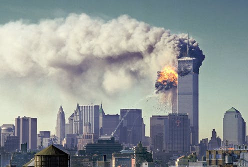

It was an Inside Job
By far the most widespread tale espoused by 9/11 conspiracy theorists - often referred to as “truthers” - is that the United States government either helped the attackers succeed, or orchestrated the entire thing themselves.
“Experts say part of the reason for the persistence of such conspiracy theories is the dissonance that results when people hear that a relatively small group of men using low-tech weapons caused such cataclysmic carnage,” says the BBC.
Truthers claim the attacks were staged to justify the subsequent wars in Afghanistan and Iraq, a theory peddled by Andreas von Bulow, a former research minister in the German government.
Controlled demolition The BBC reports that investigations in the wake of the attack “made it clear that the tower structures were weakened by the inferno from the planes and felled by the weight of collapsing floors”.
However, it adds, "even now some people refuse to believe this version of events”. A widely believed theory is that the towers were brought down in a controlled manner using demolition explosives.
The Daily Express points out that some truthers believe “the towers would not have collapsed in the way they did if they were hit by aircraft”. In footage of the incident, the two main towers can be seen collapsing in on themselves floor by floor in a downward fashion with the debris landing over a relatively small footprint.
However, the National Institute of Standards and Technology (NIST) concluded that a “very large quantity” of explosives would have been required to bring down the buildings, in an operation that could not have been hidden from the public.
Tower Seven Also tied into this theory is the fate of Tower Seven of the World Trade Center, which also collapsed despite not being directly hit by any planes.
The building, located next to the main towers, was hit by debris from the collapsing buildings and was damaged by fires which burned for seven hours until its collapse later the same evening.
Theorists believe that the building may have been demolished as it contained clandestine Secret Service and CIA offices, science and tech site Popular Mechanics reports.
This theory was initially fuelled by BBC News’s live coverage of the event, during which reporter Jane Standley accidentally announced the collapse of the building 20 minutes before it occurred, blaming the mistake on conflicting reports from other news agencies.
Military stood down In the 17 years since the attacks, speculation has been rife in regards to the immediate reaction of the US government during the first moments of the attack, once the planes were hijacked and it became clear a terrorist incident was occurring.
In a hijacking situation in the US or Canada, standard procedure specifies that the North American Aerospace Defense Command (Norad) will provide an “escort service” when requested by “the FAA Hijack Coordinator”, and will scramble jets to investigate the suspect aircraft.
“America seemingly had the most powerful air force in the world but failed to intercept any of the planes that day, which theorists believe is an indication of a government conspiracy to let the attacks go ahead,” the Daily Star says.
However, later investigations specified that not only did the attackers turn off their aircrafts’ transponders upon hijacking them, making them far harder to track on radar, but that Norad was given nowhere near enough time to intercept the planes.
Pentagon missiles The History Channel states that “early video footage and photos taken from the scene [of the Pentagon attack] did not seem to show much evidence of plane wreckage”, and that “theorists maintain this was evidence that the Pentagon was not struck by Flight 77, but by a missile or unmanned drone instead”.
However, the US government has hit back at these claims, stating that “the passenger and crew remains from American Airlines flight 77 were recovered at the Pentagon crash site, and that “eyewitness reports and photographs show plane debris at the Pentagon crash site”.
It was the work of a different agency Perhaps a more outlandish theory is that the attack was perpetrated by neither the US government nor solely al-Qaeda, but that it was orchestrated - or at least funded - by a different, foreign government or organisation.
Fingers have been pointed at everyone from the government of Saudi Arabia to the Pakistani Intelligence Agency (ICI) to the Israeli Secret Service (Mossad).
However, the 9/11 Commission Report - the final inquiry report on the incident - states: “We have seen no evidence that any foreign government – or foreign government official – supplied any funding.”
Comments